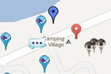

At the start of my career, I dedicated myself to studying and discussing the concept of convergence. Technological convergence has a long history, with its origins dating back to 1983 when Ithiel de Sola Pool explored the idea of the "convergence of modes," which blurred the boundaries between different forms of media. De Sola Pool's perspective went beyond technology itself, considering media and communication systems as integral parts of people's lives rather than mere outcomes of technological progress. Today, the idea of convergence is widely understood by digital natives all around the world. They are familiar with the concept of channels where information—whether it's in the form of video, sound, or text—is encoded using zeros and ones, enabling its seamless transfer between various applications and easy sharing across networks. Technological convergence, as previously explained, is just a small piece of a much larger media landscape that it has brought to life. This broader landscape encompasses the hybridization of traditional media within the new converged device we all know as the smartphone. The smartphone's rise is not merely the introduction of a new gadget; it represents the arrival of a converged platform that seamlessly incorporates an infinite number of media elements, whether the creators consciously thought it that way or the reality of an internet communicator in everyone's pocket became the ultimate convergent medium. Within smartphones, we find the convergence of various tools such as a photo camera, GPS, phone, radio, email, internet browser, pager, video camera, ebook reader, and organizer, among others. It's not just the convergence aspect that's fascinating; it's the remarkable power of integration. Imagine a magazine that includes videos and real-time streaming, while utilizing text overlaid on virtual 3D objects to provide extensive explanations of the topics at hand. This is the hybrid media experience we interact with every day, often forgetting that just 15 years ago, many of these technologies and conveniences were inaccessible, expensive, and disconnected from one another.
A comprehensive exploration of the convergence aspects within the converged device could fill an entire book. However, there are other noteworthy facets to consider within this broader trend. One such aspect is the browser, which has established itself as a dominant interaction paradigm, surpassing the traditional desktop metaphor. It has become the most recognizable and ubiquitous interface for our daily interactions on computers, tablets, and phones.
The browser itself is another convergence point within this new convergent landscape, but beneath its surface lies a technological convergence that forms the foundation of the internet. The internet, as a complex system, operates as a global network facilitated by a common language spoken by all contributing machines. The exchange of webpages using the HTTP protocol has effectively diminished the world's size, materializing Marshall McLuhan's utopian vision of a global village. The HTTP protocol not only serves as a technical mechanism but also holds cultural significance, it is a cultural protocol in itself.
At the core of the technological layer lies a protocol that empowers social network platforms and various other applications. This protocol, known as AJAX, holds significant cultural influence, much like HTTP. It serves as the foundation for asynchronous requests in social networks, chat systems, real-time weather applications, and more. AJAX's power lies in its convergent taxonomy, enabling applications and websites to asynchronously request and exchange data. While HTTP provides the infrastructure for requesting static pages, it is AJAX that allows us to interact with dynamic content, creating bridges between people, sensors, and other real-time agents. This holistic experience enhances our web sessions, enabling seamless interactions and a richer online experience. Initially, XML served as the designated format for seamless data transfer behind the scenes. However, the convergent landscape quickly transitioned from XML to JSON, a lightweight and efficient definition of data structures. This shift was not only driven by aesthetic considerations for clarity but also by the pragmatic need for integration with the interaction modules of our web pages.
JSON stands as the symbol of data convergence—a phenomenon that embraces a unified approach to data structures and data sharing. The proliferation of quantified self-platforms has led to an explosion of available data about ourselves, our behaviors, and the spaces surrounding us.
While my enthusiasm for convergence has waned in recent years due to the increasingly convergent behavior of our devices and the digitalization of objects and homes, I was recently captivated by the rediscovery of a forgotten project from two years ago. This project aimed to raise awareness about the convergence of data, highlighting its significance in our digital lives.
During my exploration of convergence, I became fascinated by the vast amount of data being made available online to the public. However, making this exploration explicit and interactive presented a non-trivial challenge due to the sheer diversity of available data. While there was a shared semantic construction for data from different sources, the content itself remained disconnected. The main challenge lay in finding a common narrative that could connect various datasets and data items. The concept underwent several stages of development, but the most powerful idea emerged with the notion of a convergence space.
It is safe to say that most people are accustomed to abstracting the representation of space onto a two-dimensional surface, at least in theory. This makes maps the perfect convergence space for creating a story behind data. Maps have played a crucial role in the past and continue to be highly relevant today in their digital form. Georeferenced collections are particularly intriguing as they originate from a spectrum of diverse sources. Convergence Map serves as a data storm, presenting an abundance of information on the most natural virtual platform for geotagged collections—the map itself.
The first step was to start with a blank canvas, a map devoid of labels and text. This transformed the map into a referential space, prioritizing its role as a framework for meaning rather than merely providing information. The elements that contribute to the overall significance are loaded asynchronously, leveraging the convergent and common JSON format.
Various requests are sent to servers, querying them for data pertaining to a specific location, which defaults to the user's own location. In fact, the viewer's initial interaction with the page seamlessly provides Convergence Map with the current geographical coordinates. This information serves as the primary input for the convergent requests that generate the visualization on the map. The collections are dissected and read item by item, resulting in a collective manifestation of the datasets on the map.
Each item within the collections carries a pair of latitude and longitude coordinates, allowing Convergence Map to plot a marker on the map's surface for each item. Clicking on a marker triggers a response, opening a window that provides additional details about the information contained within the corresponding item of the source collection.
The diverse content of the collections causes each individual marker to stand out distinctly from its neighbors. The map becomes a collision of information—a unique blend of static and real-time data. Each marker negotiates attention by displaying a portion of its content or simply referencing the authority that delivered it.
This experiment began with a spirit of discovery, without any preconceived expectations about the final outcome. The result is a thought-provoking map that reveals valuable insights about participatory information collection and the potential for new forms of narrative.